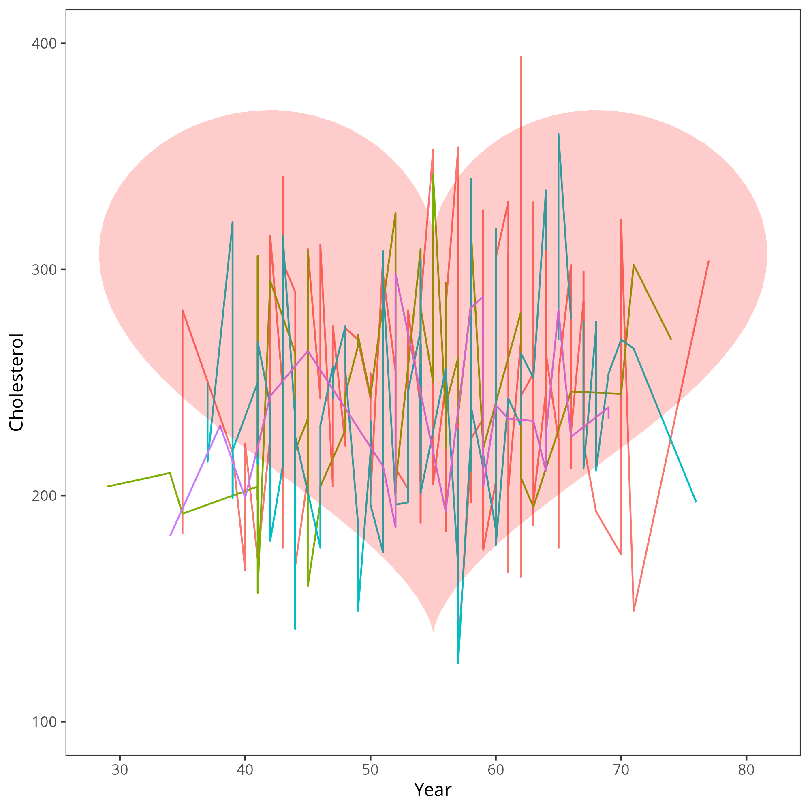
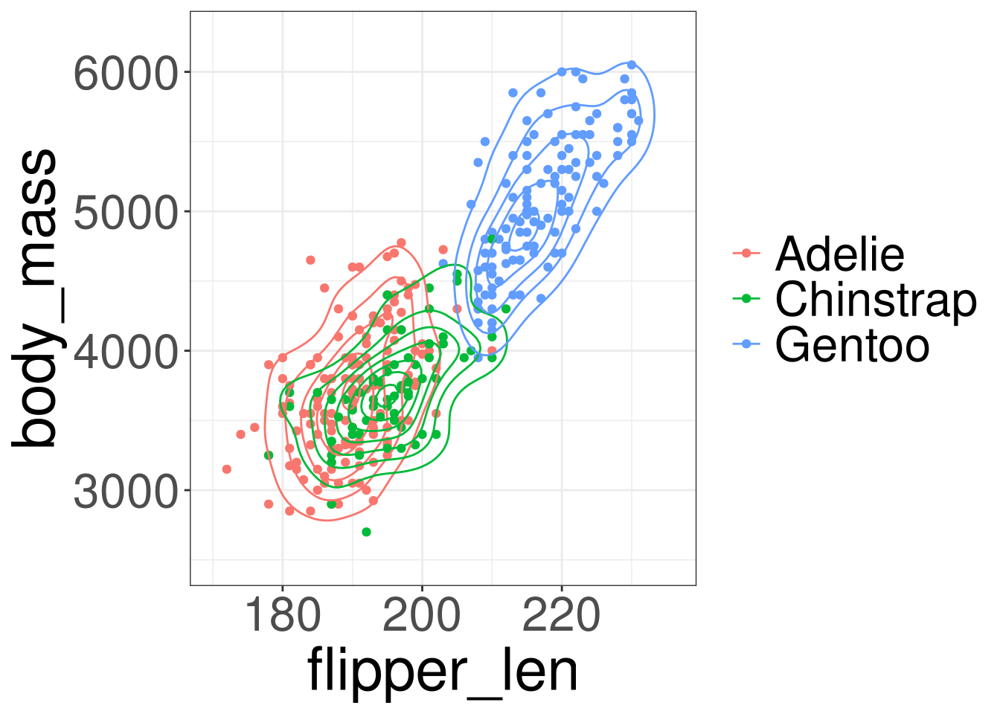
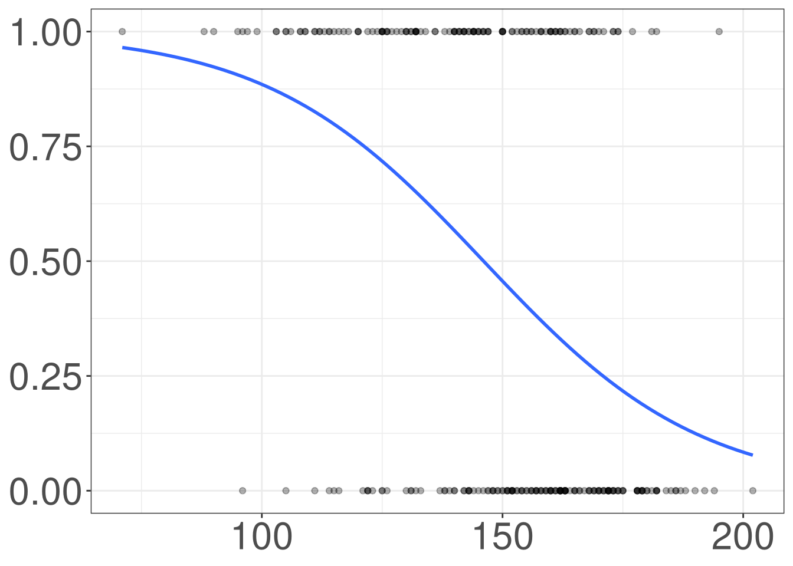

Multivariable
Regression
R Packages
- rcistats
- tidyverse
Palmer Penguins Data
Variables of Interest
species: Penguin speciesflipper_len: Flipper Length in millimetersbody_mass: Body mass in grams

Heart Disease Data
Variables of Interest
thal: Thallium stress test resultthalach: Maximum heart rate achieveddisease: Indicating if they have heart disease

Visualizations
Visualizations
Multivariable Linear Regression
Multivariable Logistic Regression
Modelling Body Mass
Modeling Heart Disease
Model Building
Penguins: Body Mass

Code
#> Warning in stat_density_2d(aes(fill = after_stat(level))): Ignoring unknown
#> aesthetics: fill#> Warning: Removed 1 row containing non-finite outside the scale range
#> (`stat_density2d()`).#> Warning: Removed 1 row containing missing values or values outside the scale range
#> (`geom_point()`).
Heart Disease
Code
#> `geom_smooth()` using formula = 'y ~ x'
Multivariable Linear Regression
Visualizations
Multivariable Linear Regression
Multivariable Logistic Regression
Modelling Body Mass
Modeling Heart Disease
Model Building
Multivariable Linear Regression
Multivariable Linear Regression (MLR) is used to model an outcome variable (\(Y\)) by multiple predictor variables (\(X_1, X_2, \ldots, X_p\)).
Using MLR, you propose that the ouctome variable was constructed from a set of predictors, with their corresponding regression coefficients (\(\beta\)), and a bit of error
\[ Y = \beta_0 + \beta_1 X_1 + \beta_2 X_2 + \cdots + \beta_p X_p + \varepsilon \]
\[ \varepsilon \sim DGP \]
Model Data
\[ Y = \beta_0 + \beta_1 X_1 + \beta_2 X_2 + \cdots + \beta_p X_p + \varepsilon \]
\[ \varepsilon \sim DGP \]
\[ Y_i = \beta_0 + \beta_1 X_{i1} + \beta_2 X_{i2} + \cdots + \beta_p X_{ip} + \varepsilon_i \]
\[ \varepsilon_i \sim DGP \]
Unknown Parameters
\[ Y_i = \beta_0 + \beta_1 X_{i1} + \beta_2 X_{i2} + \cdots + \beta_p X_{ip} + \varepsilon_i \]
\[ \beta_0, \beta_1, \beta_2, \beta_3, \ldots, \beta_p \]
Estimated Model
\[ Y_i = \beta_0 + \beta_1 X_{i1} + \beta_2 X_{i2} + \cdots + \beta_p X_{ip} + \varepsilon_i \]
\[ \hat Y_i = \hat\beta_0 + \hat\beta_1 X_{i1} + \hat\beta_2 X_{i2} + \cdots + \hat\beta_p X_{ip} \]
Estimating Prameters
\(\beta_0, \beta_1, \beta_2, \beta_3, \ldots, \beta_p\) are estimated by minimizing the following function:
\[ \sum^n_{i=1} (Y_i-\hat Y_i)^2 \]
Fitting a LM in R
DATA: Name of the data frameY: Outcome Variable of Interest in the data frameDATAX1,X2, … ,X_p: Predictor variables in the data frameDATA
Multivariable Logistic Regression
Visualizations
Multivariable Linear Regression
Multivariable Logistic Regression
Modelling Body Mass
Modeling Heart Disease
Model Building
Multivariable Logistic Regression
Multivariable Logistic Regression is used to model a binary outcome variable (\(Y\)) with multiple predictor variables (\(X_1, X_2, \ldots, X_p\)).
Using Multivariable Logistic Regression, you propose that the ouctome variable was constructed from a set of predictors, with their corresponding regression coefficients (\(\beta_j\)), and generated from a Bernoulli model.
Logistic Model
\[ lo(Y=1) = \beta_0 + \beta_1X_1 + \cdots + \beta_p X_p \]
Regression Coefficients \(\beta\)
The regression coefficients quantify how a specific predictor changes the odds of observing the first category of the outcome (\(Y = 1\))
Estimating \(\beta\)
To obtain the numerical value for \(\beta_j\), denoted as \(\hat \beta_j\), we will be finding the values of \(\hat \beta_j\) that maximizes the likelihood function:
\[ L(\boldsymbol \beta) = \prod_{i=1}^n \left(\frac{e^{\beta_0 + \beta_1X_1 + \cdots + \beta_p X_p}}{1 + e^{\beta_0 + \beta_1X_1 + \cdots + \beta_p X_p}}\right)^{Y_i}\left(\frac{1}{1 + e^{\beta_0 + \beta_1X_1 + \cdots + \beta_p X_p}}\right)^{1-Y_i} \]
The likelihood function can be thought as the probability of observing the entire data set. Therefore, we want to choose the values the \(\beta_0\) and \(\beta_1\) that will result in the highest probability of observing the data.
Estimated Parameters
The values you obtain (\(\hat \beta\)) tell you the relationship between the a predictor variable and the log odds of observing the first category of the outcome \(Y=1\), adjusting for all the other covariates.
Exponentiating the estimate (\(e^{\hat \beta}\)) will give you the relationship between a predictor variable and the odds of observing the first category of the outcome \(Y=1\), adjusting for all the other covariates.
Interpreting \(\hat \beta_j\)
For a continuous predictor variable:
As X increases by 1 unit, the odds of observing the first category (\(Y = 1\)) increases by a factor of \(e^{\hat\beta_j}\), adjusting for alll the other predictor variables.
For a categorical predictor variable (first dummy variable):
The odds of observing the first category (\(Y = 1\)) in the indicated category (\(D=1\)) is \(e^{\hat\beta_j}\) times higher/lower compared to the reference category (\(D=0\)), adjusting for alll the other predictor variables.
Fitting a GLM in R
DATA: Name of the data frameY: Outcome Variable of Interest in the data frameDATAX1,X2, … ,X_p: Predictor variables in the data frameDATA
Modelling Body Mass
Visualizations
Multivariable Linear Regression
Multivariable Logistic Regression
Modelling Body Mass
Modeling Heart Disease
Model Building
Modelling Body Mass
\[ body\_mass = \beta_0 + \boldsymbol \beta_1 (species) + \beta_2 (flipper\_len) \]
Fitting Model
#> Outcome Variable: body_mass#> Numerical Predictors:
#> flipper_len#> Categorical Predictors:
#> species:
#> Adelie (Reference)
#> Chinstrap
#> GentooEstimated Model
\[ body\_mass = -4013.18 -205.38 (Chinstrap)\\ + 284.52 (Gentoo) + 40.61 (flipper\_len) \]
Intepreting \(flipper\_len\) coefficient
\[ body\_mass = -4013.18 -205.38 (Chinstrap)\\ + 284.52 (Gentoo) + 40.61 (flipper\_len) \]
As flipper length increased by 1 unit, body mass increases by an average of 40.61, adjusting for penguin species.
Intepreting \(species\) coefficient
\[ body\_mass = -4013.18 -205.38 (Chinstrap)\\ + 284.52 (Gentoo) + 40.61 (flipper\_len) \]
Modeling Heart Disease
Visualizations
Multivariable Linear Regression
Multivariable Logistic Regression
Modelling Body Mass
Modeling Heart Disease
Model Building
Modelling Heart Disease
\[ lo(disease) = \beta_0 + \boldsymbol \beta_1 (thal)\\ + \beta_2 (thalach) \]
Fitting Model
#> Warning in model.response(mf, "numeric"): using type = "numeric" with a factor
#> response will be ignored#> Warning: In lm.fit(x, y, offset = offset, singular.ok = singular.ok, ...) :
#> extra argument 'family' will be disregarded#> Warning in Ops.factor(y, z$residuals): '-' not meaningful for factors#> Outcome Variable: disease#> Numerical Predictors:
#> thalach#> Categorical Predictors:
#> thal:
#> Normal (Reference)
#> Fixed Defect
#> Reversible DefectEstimated Model
\[ lo(disease) = 2.255 + 0.305 (Fixed) + 0.46 (Reversible)\\ - 0.006 (thalach) \]
Intepreting \(thalach\) coefficient
\[ lo(disease) = 2.255 + 0.305 (Fixed) + 0.46 (Reversible)\\ - 0.006 (thalach) \]
As maximum heart rate achieved increases by 1 unit, the odds of having heart disease decresease by a factor of 0.994, adjusting for thallium stress test results.
Intepreting \(thal\) coefficient
\[ lo(disease) = 2.255 + 0.305 (Fixed) + 0.46 (Reversible)\\ - 0.006 (thalach) \]
The odds of having heart disease is 1.356 times higher in patients with fixed defects thallium stress results than patients with normal thallium stress results, adjusting for maximum heart rate achieved.
Model Building
Visualizations
Multivariable Linear Regression
Multivariable Logistic Regression
Modelling Body Mass
Modeling Heart Disease
Model Building
Model Building
Model Building is the process of obtaining a “final” model containing all the necessary predictors, and eliminating any that are not necessary.
Forward Selection
Begin with the null model (\(Y\sim 1\)) and add predictor variables until a final model is chosen.
Backward Selection
Begin with the full model, and remove predictor variable until the final model is chosen.
Hybrid Selection
A hybrid approach between the forward and backward building approach.
About Model Selection
Generally, it is not a good idea to conduct model selection. The predictor variables in your model should be guided by a literature review that illustrates important predictor variables in a model. Add predictor variables based on consultation with experts and a literature review.
m201.inqs.info/lectures/8